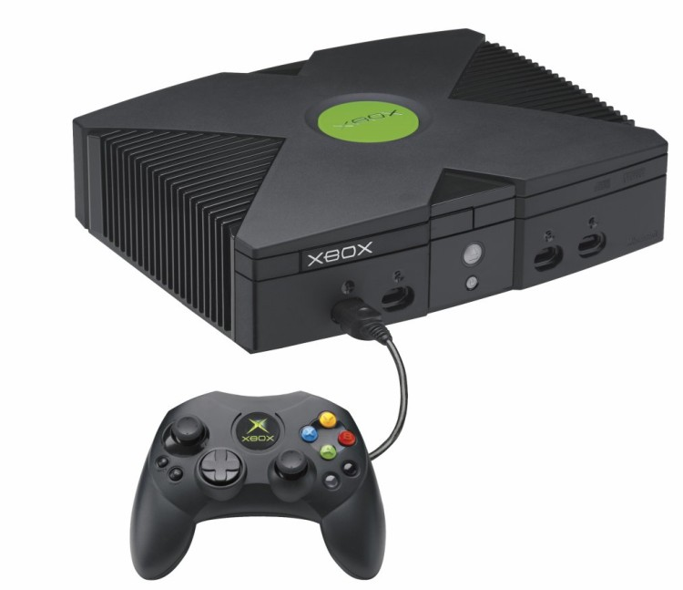

Exhibit 012002

2002
Xbox Live
Microsoft launched Xbox Live in 2002. A friends list, voice chat, and one identity across games made the network part of the console, not an add-on.
Why it mattered
It made online play a default console feature and turned a solo machine into a social service.